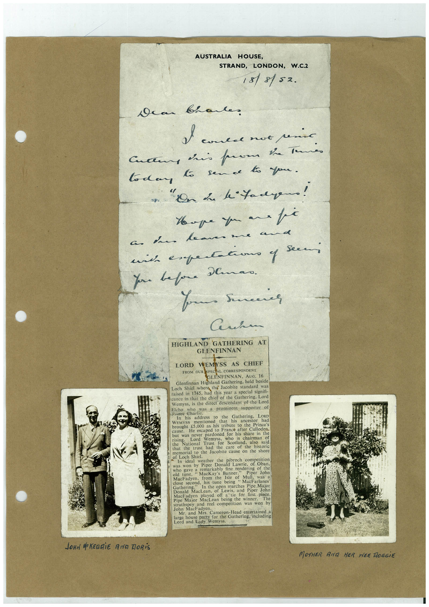

Book 1 · scan 072


Description
Transcription
Context
Review notes
Compare the machine draft with the scan. Handwriting and names need human review.
Artifacts
Edit the artifacts field in this note’s frontmatter to change these records. This summary is generated.
B01-S072-A01 — Photo, Newspaper clipping, Letter & Handwritten note — Book 1, scan 072
Types: Photo, Newspaper clipping, Letter, Handwritten note
Scope: Whole scanned page; individual items can be split out during review.
Caption: Not mapped yet.
Caption source: Not recorded yet.
Caption status: unmapped
Machine transcription
AUSTRALIA HOUSE, STRAND, LONDON, W.C.2 18/8/52. dear brante I comes not senio Culture iris pare be tenni to dan to sende to you. Hope you an a fi nich expertacono y You before Demao. Your serenes Seem HIGHLAND GATHERING AT GLENFINNAN LORD WEMYSS AS CHIEF FROM OUR SPECIAL CORRESPONDENT GLENFINNAN, AUG. 16 Glenfinnan Highland Gathering, held beside Loch Shiel where the Jacobite standard was raised in 1745, had this year a special signifi- cance in that the chief of the Gathering, Lord Wemyss, is the direct descendant of the Lord Elcho who was a prominent supporter of Prinee Charte. In his address to the Gathering, LoRD brought mentioned that his ancestor had €5.000 as his tribute to the Prince's He escaped to France after Culloden, but was never pardoned for his share in the Wemyss who is chairman of rise National Trust for Scotland, also said that the trust had the care ot the historic memorial to the Jacobite cause on the shore of Loch Shiel. In ideal weather the was won by Piper Donald Lawrie. Pi Lavico of ban. who gave a remarkably fine rendering of the old tune, • MacKay's Banner Piper John from the Isle of Mull, was a close second, his tune being "MacFarlanes Doned Mactath of Lewis, and Piper Joh MacFadyen played off a tie for hirst place Pipe Major MacLean being the winner. The strathspey and reel competition was won by John MacFadyen. Mr. and Mrs. Cameron-Head entertained a for the Gathering, including Lord and Lady Wemyss JOHN dREDGiE ANG DORiS MOTHER AND HER HEE HOGGiE